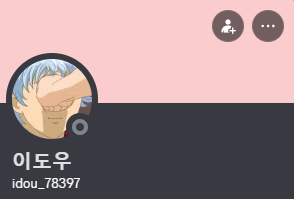
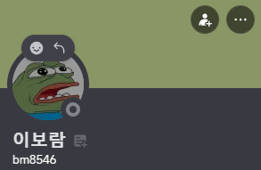

現在、ドウですか？
チーム名「現在、ドウですか？」には、2つの意味が込められています。
一つ目は、インタビューを行った加藤さんの現在の様子を尋ねる言葉。
二つ目は、海外就職や海外生活を目指す私たちの今を問いかける言葉です。
本プロジェクトでは、加藤さんの経験を通して、海外で働くこと・暮らすことに関する実際の声を伝えることを目的としています。
そのお話は、私たち3人だけでなく、現在「青海進プログラム」本課程に参加している全てのメンバーにとっても意味のある内容です。

Our Members

김현재
팀 리더
2024학번
프로젝트 감상
인터뷰를 통해 많은 걸 배웠습니다.

이도우
디자이너
2024학번
프로젝트 감상
협업의 소중함을 느꼈습니다.

이보람
프론트엔드
2024학번
프로젝트 감상
많은 성장을 했습니다.
青海進プログラムについて
青海進（チョンヘジン）プログラムは、海外就職を目指す韓国の大学生を対象に、
語学研修・職業訓練・インターンシップ・就職支援などを総合的に提供するグローバル人材育成プログラムです。
本プログラムは、韓国教育部と韓国産業人力公団の支援により運営されており、
海外企業との連携を通じて、実際の就職につながる機会を提供しています。
「青海進（청해진）」は「청년（青年）＋해외（海外）＋진출（進出）」を意味し、
若者のグローバルな挑戦を後押しするプログラムです。